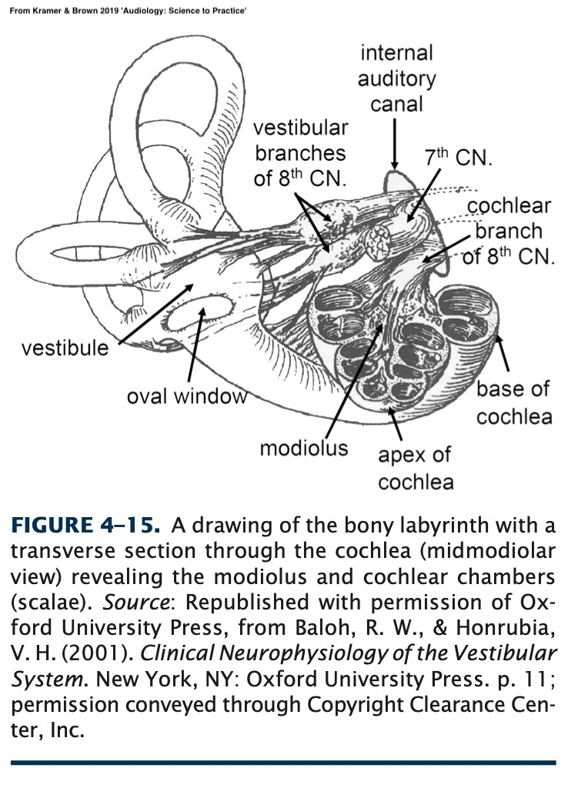
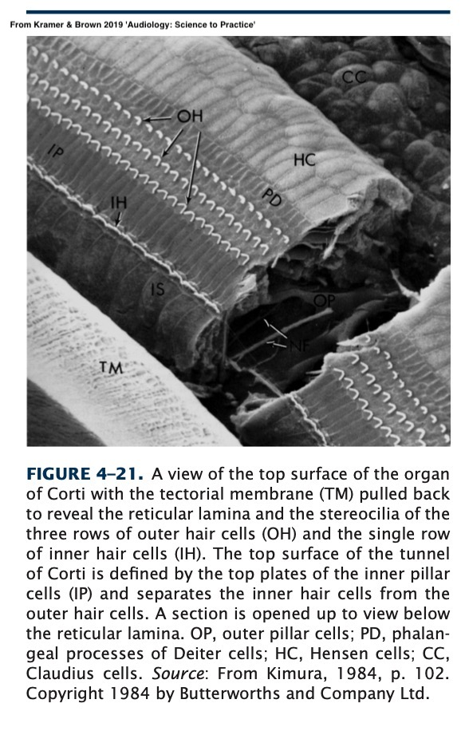
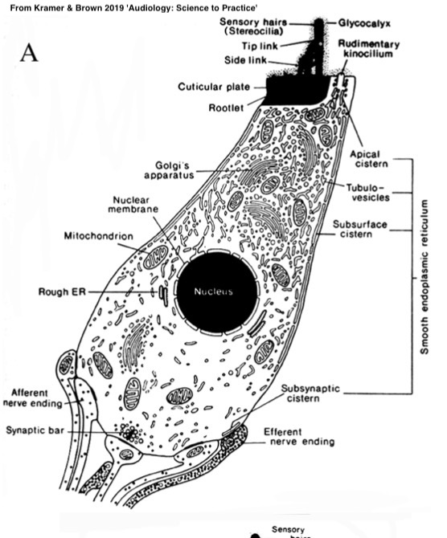

Will Styler - LIGN 113
The Organ of Corti
The Journey of Sound



We need to ‘transduce’ the sound from kinetic energy to electrical energy
That’s the role of the organ of corti!
Amplify sound further
Transduce sound from kinetic to electric energy
Transmit that energy to the brain

Dieter and Hensen Cells
Tectorial Membrane
The Stria Vascularis
Outer Hair Cells (OHCs)
Inner Hair Cells (IHCs)
8th Nerve
Provide structural support for the OHCs
Not super interesting!
These have some small physiological roles
They show promise for future research, but we mostly don’t care
Produces Endolymph
Has specific cells dedicated to transporting K+ ions into the endolymph
This is amazingly important
The Cochlea is a little tiny structure
Embedded in bone
Inside a human’s head
Godspeed, researchers
Seems to play a role in frequency specification and amplification
Not a great thing when it’s missing
Outer hair cell tips are inside the tectorial membrane
The Outer Hair cells help to amplify motion of the basilar membrane
The cell’s length shifts in harmony with the sound
Preferentially amplifies quiet sounds



They’re connected to the tectorial membrane
They help us a lot in hearing
Inner hair cells transduce vibration into electric potential
These are a crucial element of the chain

They turn basilar membrane vibrations into nerve signals
We’ll talk about how in physiology!
IHCs are connected to the Spiral Ganglion
They transmit a train of pulses down the nerves

Also known as the ‘Eighth Cranial nerve’ or the ‘Auditory Nerve’
Splits off from the ‘Vestibulocochlear Nerve’
In a format it can understand
The rest is physiological awesomeness

“Wait, how do hair cells on top of a membrane trigger nerve firings?”
“If nerves only send pulses, how do we capture gradient changes in amplitude?”
“Why do chemicals which build up in the stria vascularis lead to profound hearing loss?”
“Wait, how the heck do you replace the entire organ of corti with an implanted device?”
All this and more, later in LIGN 113!